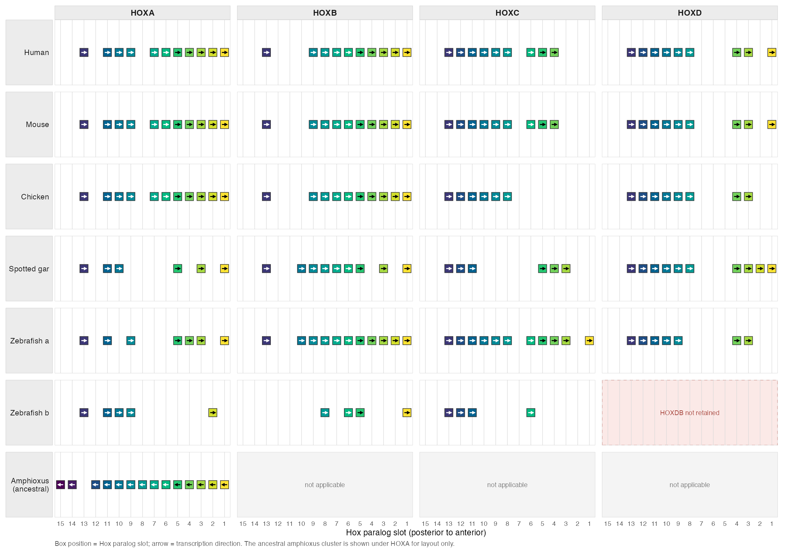

Grammar of genomic annotations, synteny, and associated data.
ggexon is a ggplot2 extension for drawing genomic annotation together with comparative and track-level data. It was developed while visualizing the sept-1/zina-1 toxin-antidote locus described in the preprint sept-1/zina-1 is an Ancient Toxin-Antidote System in Caenorhabditis elegans.
The package has two connected parts:
- S4 classes store genomes, annotation layers, alignments, and reusable layout state.
- Functions load, query, modify, and draw those classes with a ggplot2-style grammar.
If you already think in ggplot2, the goal is that genomic coordinates, annotation tracks, alignments, and tree-aligned panels can all be composed with familiar plotting ideas.
Flagship HOX Cluster Expansion Example

The bundled HOX cluster-expansion tutorial compares six chordate species in a seven-row by four-column matrix. HOXA through HOXD show the four vertebrate cluster families and the duplicated zebrafish a and b rows. The single ancestral amphioxus cluster is displayed under HOXA only as a compact layout anchor; this placement does not assign it specifically to HOXA. Its HOXB–HOXD cells are structural blanks. A not-retained zebrafish HOXDB cluster and unoccupied gene slots within retained clusters remain visually distinct.
Genes are drawn with geom_genebox() as fixed-size squares containing strand-direction arrows. strip_scale_x(slot_order = ...) aligns every gene to a shared Hox15-to-Hox1 template, so genes assigned to the same curated Hox-number slot occupy exactly the same x coordinate. Box position represents that paralog-slot alignment, whereas the arrow independently represents transcription direction; amphioxus therefore retains its left-pointing arrows without breaking homolog-slot alignment. Unoccupied positions remain visible and do not by themselves imply gene loss. The tutorial removes nucleotide and synteny links, and also demonstrates initiation, genomic coding-midpoint, and stop anchor modes on the human HOXA cluster, with any terminal-CDS positional proxies flagged in the bundled data. Its annotations are pinned to Ensembl release 116 for vertebrates and Ensembl Metazoa release 63 for amphioxus.
Open vignette("hox-cluster-expansion-demo", package = "ggexon") for the full example, selected-transcript provenance, and source audit trail.
Installation
ggexon is currently a development package.
install.packages("remotes")
remotes::install_github("DongyaoLiu/ggexon")Some dependencies are from Bioconductor. If your R installation cannot resolve them automatically, install them first:
install.packages("BiocManager")
BiocManager::install(c(
"Biostrings",
"GenomeInfoDb",
"GenomicRanges",
"Rsamtools",
"rtracklayer"
))For ODGI-backed graph alignment workflows, install the system tools listed in DESCRIPTION:
- Python 3.8 or newer
odgi
Package Map
Part 1: Classes Store Data
The core data containers are:
| Class | Role |
|---|---|
SynSpecies |
Project-level container for individuals, alignments, trees, and layout state |
SynIndividual |
One genome, strain, species, or sample |
SynFeatureAnnotation |
Genes, transcripts, exons, CDS, labels, and annotation patches |
SynVCFAnnotation |
Variant data queried by genomic interval |
SynBigWigAnnotation |
Signal tracks queried by genomic interval |
SynProteinDomainAnnotation |
Protein-domain intervals from InterProScan-like tables |
SynProteinMutationAnnotation |
Protein mutation summaries for lollipop-style tracks |
HomologyAnnotation |
Cross-species gene homology mappings from BLAST results |
SynPairAlignment |
Pairwise genome links from PAF, PSL, or ODGI-derived data |
SynMultiAlignment |
Multi-genome alignment links from MAF or ODGI-backed data |
SynLayout |
Stored panel windows and layout decisions |
Part 2: Functions Manipulate and Draw Classes
The public API is organized around a few function families:
| Task | Main functions |
|---|---|
| Build object graphs |
add_individual(), add_annotation(), add_homology_annotation(), add_pairwise_alignment(), add_multiple_alignment(), add_tree()
|
| Load and query data |
load_annotation(), load_alignment(), import_blast_homology(), query_features(), query_variants(), query_signal(), query_domains()
|
| Derive sequence/protein data |
extract_cds_seq(), translate_protein(), project_domains_to_genome()
|
| Subset and curate objects |
subset_species(), subset_individual(), subset_pairwise_alignment(), set_gene_labels(), patch_annotation_from_gff()
|
| Draw genomic layers |
ggexon(), geom_exon(), geom_coverage(), geom_genetag(), geom_genebox(), geom_genelabel(), geom_nuclink(), geom_synteny_link(), geom_protein_lollipop()
|
| Arrange panels and guides |
facet_genomics(), scale_panel_annotation(), scale_panel_coverage(), center_panel_annotation(), facet_genomictree(), scale_x_ggexon_genomic(), guide_x_ggexon_piecewise()
|
The typical workflow is:
library(ggexon)
x <- SynIndividual(
genome_file = "genome.fasta",
annotation_file = "annotation.gff3",
id = "sample"
)
sp <- SynSpecies(name = "project") |>
add_individual(x)
ggexon(sp) +
geom_exon(species = "sample", chr = "chr1")Learn More
The package site contains the longer cookbook-style documentation:
-
vignette("ggexon-classes-and-verbs", package = "ggexon")for the class model, every geom, facet systems, and the genomic guide. -
vignette("ggexon-workflow", package = "ggexon")for a step-by-step workflow using individuals, annotations, alignments, and direct plotting. -
vignette("hox-cluster-expansion-demo", package = "ggexon")for the Ensembl-pinned HOX cluster matrix, exact curated Hox-number slots, andgeom_genebox()anchor modes. -
vignette("bigwig-coverage-demo", package = "ggexon")for four independent raw-depth BigWig panels above one shared, centered gene annotation. -
?ggexonand the reference index for function-level documentation.
If you use ggexon in work, please also cite the preprint:
Liu D, Zheng C. sept-1/zina-1 is an Ancient Toxin-Antidote System in Caenorhabditis elegans. bioRxiv. 2025. https://www.biorxiv.org/content/10.1101/2025.11.28.691152v1